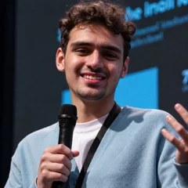

Julio César Sandoval
Generative AI Architect · AI Engineer · GenAI Solutions Consultant
Los Mochis, Mexico · Remote juliocesarssantoyo@gmail.com LinkedIn GitHub Resume (PDF)
About
Software engineer and data scientist with 4 years building enterprise software and 3+ years shipping generative AI to production. I design multi-agent and RAG systems on Microsoft Azure that put financial and operational answers in front of C-level users, working end to end — requirements, architecture, Python and SQL implementation, deployment — in direct collaboration with Microsoft.
Download resumeExperience
Data Scientist, Generative AI — Derevo
Mar 2024 – Present- Led AI development of LUCA Bot for Cemex México with Microsoft: a multi-agent system on Azure and Copilot Studio giving executives secure, instant access to business data.
- Built C-Agent, Derevo’s flagship GenAI decision-support product, exhibited at Microsoft’s Innovation Hub in Mexico City.
- Designed RAG pipelines over SQL databases with millions of records and thousands of PDFs, generating SQL and Python from natural language with live visualizations.
- Ship multilingual multi-agent chatbots for C-level users via Microsoft Teams and web; lead small delivery teams and train teams in prompt engineering.
Data Scientist — AARFS A.C.
Jan 2023 – Dec 2023- Built GPT-3.5 chatbots for technical support and ERP/SQL documentation retrieval to reduce repetitive tickets.
- Developed and deployed RNN/LSTM sales forecasting models in TensorFlow, integrated with SQL Server.
Fullstack Developer — Finesoft
Jun 2022 – Dec 2022- Built and maintained web billing tools with C#, ASP.NET and SQL Server.
Projects
- SimpleClaudeAgent — Desktop agent for Windows, macOS and Linux built on the Claude Agent SDK; reads, writes and runs commands in a folder, creates reusable skills and remembers corrections.
- Castube — Natural-language YouTube search with timestamped results and summaries.
- HTMLGen — Conversational generator of functional HTML/CSS/JS components.
- Prompt Engineering: A Practical Guide — 23-page manuscript (Spanish) with applied guidance and GPT-4o examples.
- EntropySoccer — Browser multiplayer button-soccer with simultaneous turns and deterministic server-side physics.
- SQL-GPT — Generate and run SQL from natural language.
Skills
- Generative AI
- Multi-agent systems, agentic RAG, prompting, context optimization, embeddings, evaluation, guardrails
- Models & tools
- GPT, Claude, Model Context Protocol (MCP), Claude Code, GitHub Copilot
- Data & backend
- Python, SQL, vector databases
- Cloud
- Microsoft Azure, Azure OpenAI, Copilot Studio, Google Cloud, Git
- Software
- .NET, Angular
Certifications
- GitHub Copilot — Microsoft, 2026
- Databricks Certified Generative AI Engineer Associate — 2025
- Agentic AI Proficient Developer, FY25 — Microsoft, 2025